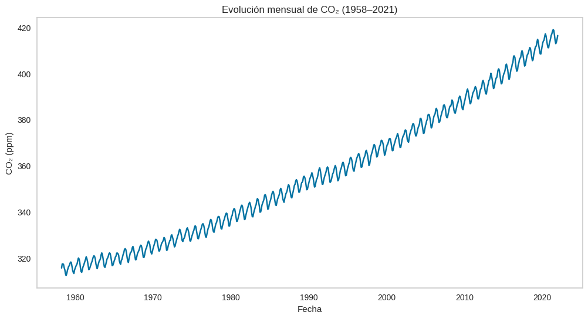
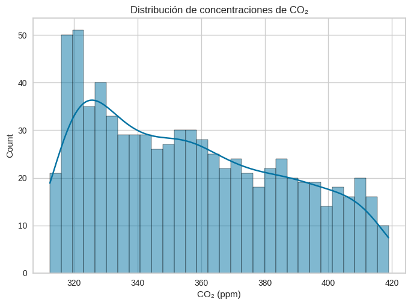
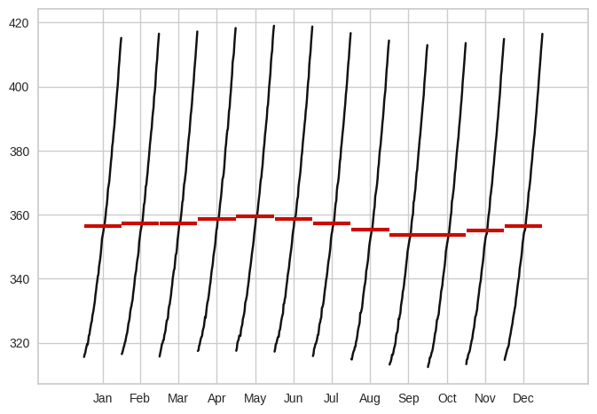
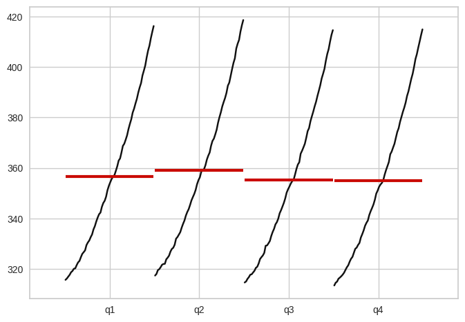
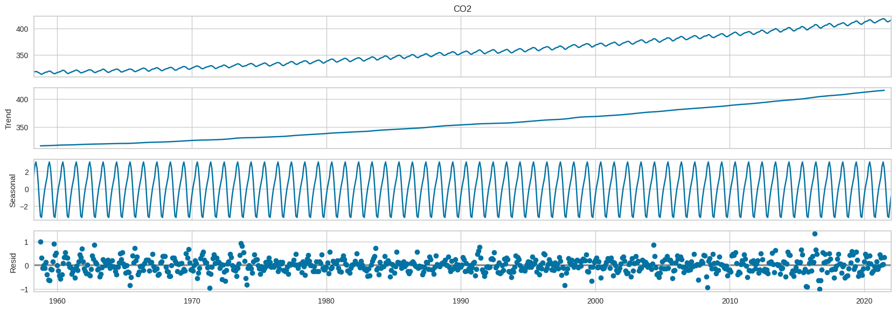
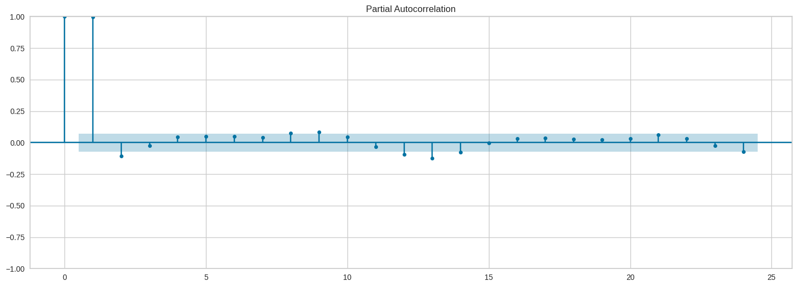
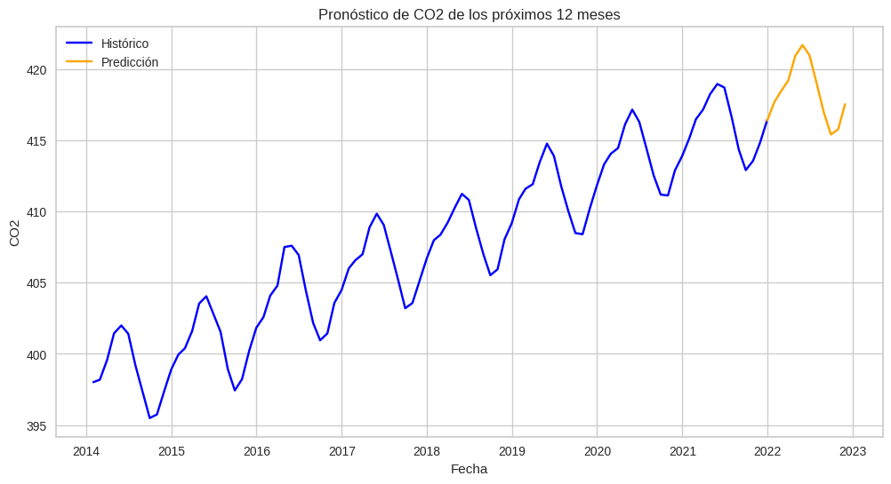

Analisis del dataset de CO2
El dataset de CO₂ que comienza en 1958 y llega hasta 2021 corresponde a las mediciones en el Observatorio de Mauna Loa (Hawái). Es la serie temporal más famosa de dióxido de carbono atmosférico, conocida como la Curva de Keeling, y se considera el registro continuo más largo de CO₂ en la atmósfera
Cargar las librerias y el dataset
import pandas as pd
import matplotlib.pyplot as plt
import seaborn as sns
from statsmodels.tsa.seasonal import seasonal_decompose
from pycaret.time_series import *
from statsmodels.graphics.tsaplots import month_plot, quarter_plot, plot_pacf
import os, contextlibdata = pd.read_csv("./mauna_loa_co2.csv", index_col = 'datetime', parse_dates = True)
data = data.asfreq("M")
data.head()| CO2 | |
|---|---|
| datetime | |
| 1958-03-31 | 315.70 |
| 1958-04-30 | 317.45 |
| 1958-05-31 | 317.51 |
| 1958-06-30 | 317.25 |
| 1958-07-31 | 315.86 |
El índice son las fechas del ultimo día de cada mes
Análisis Exploratorio de Datos
data.info()<class 'pandas.core.frame.DataFrame'>
DatetimeIndex: 766 entries, 1958-03-31 to 2021-12-31
Freq: M
Data columns (total 1 columns):
# Column Non-Null Count Dtype
--- ------ -------------- -----
0 CO2 766 non-null float64
dtypes: float64(1)
memory usage: 12.0 KBplt.figure(figsize=(12,6))
sns.lineplot(x='datetime', y='CO2', data=data)
plt.title("Evolución mensual de CO₂ (1958–2021)")
plt.grid(False)
plt.ylabel("CO₂ (ppm)")
plt.xlabel("Años");
Con el pasar de los años el CO2 fue aumentando
sns.histplot(data['CO2'], bins=30, kde=True)
plt.title("Distribución de concentraciones de CO₂")
plt.xlabel("CO₂ (ppm)");
A nivel mensual no se observa una estacionalidad
month_plot(data);
Tampoco se obseva estacionalidad a nivel trimestral
quarter_plot(data["CO2"].resample("Q").mean());
Se observa una tendencia creciente, los residuos esta no estan dispersos
seasonal_decompose(data["CO2"], model="add", period=12).plot().set_size_inches(18,6); 
En el gráfico de la autocorrelación parcial, se observa que el anterior mes y el mes del año anterior son importantes para la predicción
plot_pacf(data["CO2"], lags=24).set_size_inches(18,6);
Modelado
Antes de iniciar el modelo, no usaremos todo el dataset, porque hay valores muy antiguos, tomaremos encuenta desde 2014.
new_data = data["2014":]
new_data.head()| CO2 | |
|---|---|
| datetime | |
| 2014-01-31 | 398.01 |
| 2014-02-28 | 398.18 |
| 2014-03-31 | 399.56 |
| 2014-04-30 | 401.44 |
| 2014-05-31 | 401.99 |
Se entrenara con casi todo el dataset, menos los ultimos 12 meses, que serviran de comparacion
with contextlib.redirect_stdout(open(os.devnull, 'w')):
exp = setup(
data=new_data,
target='CO2',
fh=12,
fold_strategy='expanding',
fold=3,
session_id=123,
use_gpu=True, verbose=True
)| Description | Value | |
|---|---|---|
| 0 | session_id | 123 |
| 1 | Target | CO2 |
| 2 | Approach | Univariate |
| 3 | Exogenous Variables | Not Present |
| 4 | Original data shape | (96, 1) |
| 5 | Transformed data shape | (96, 1) |
| 6 | Transformed train set shape | (84, 1) |
| 7 | Transformed test set shape | (12, 1) |
| 8 | Rows with missing values | 0.0% |
| 9 | Fold Generator | ExpandingWindowSplitter |
| 10 | Fold Number | 3 |
| 11 | Enforce Prediction Interval | False |
| 12 | Splits used for hyperparameters | all |
| 13 | User Defined Seasonal Period(s) | None |
| 14 | Ignore Seasonality Test | False |
| 15 | Seasonality Detection Algo | auto |
| 16 | Max Period to Consider | 60 |
| 17 | Seasonal Period(s) Tested | [12, 11, 24, 13] |
| 18 | Significant Seasonal Period(s) | [12, 11, 24, 13] |
| 19 | Significant Seasonal Period(s) without Harmonics | [24, 11, 13] |
| 20 | Remove Harmonics | False |
| 21 | Harmonics Order Method | harmonic_max |
| 22 | Num Seasonalities to Use | 1 |
| 23 | All Seasonalities to Use | [12] |
| 24 | Primary Seasonality | 12 |
| 25 | Seasonality Present | True |
| 26 | Seasonality Type | mul |
| 27 | Target Strictly Positive | True |
| 28 | Target White Noise | No |
| 29 | Recommended d | 1 |
| 30 | Recommended Seasonal D | 1 |
| 31 | Preprocess | False |
| 32 | CPU Jobs | -1 |
| 33 | Use GPU | True |
| 34 | Log Experiment | False |
| 35 | Experiment Name | ts-default-name |
| 36 | USI | 336c |
Usaremos la metrica de MAPE para elegir el mejor modelo
best = compare_models(sort='MAPE')
best| Model | MASE | RMSSE | MAE | RMSE | MAPE | SMAPE | R2 | TT (Sec) | |
|---|---|---|---|---|---|---|---|---|---|
| auto_arima | Auto ARIMA | 0.1159 | 0.1485 | 0.2941 | 0.3914 | 0.0007 | 0.0007 | 0.9439 | 12.2633 |
| exp_smooth | Exponential Smoothing | 0.1093 | 0.1421 | 0.2779 | 0.3750 | 0.0007 | 0.0007 | 0.9502 | 0.0467 |
| ets | ETS | 0.1093 | 0.1421 | 0.2779 | 0.3750 | 0.0007 | 0.0007 | 0.9502 | 0.0933 |
| ada_cds_dt | AdaBoost w/ Cond. Deseasonalize & Detrending | 0.1552 | 0.1801 | 0.3912 | 0.4714 | 0.0009 | 0.0010 | 0.9313 | 0.2700 |
| stlf | STLF | 0.1459 | 0.1734 | 0.3678 | 0.4549 | 0.0009 | 0.0009 | 0.9256 | 0.0367 |
| omp_cds_dt | Orthogonal Matching Pursuit w/ Cond. Deseasonalize & Detrending | 0.1680 | 0.1903 | 0.4252 | 0.4996 | 0.0010 | 0.0010 | 0.9058 | 0.2067 |
| catboost_cds_dt | CatBoost Regressor w/ Cond. Deseasonalize & Detrending | 0.1705 | 0.1995 | 0.4307 | 0.5229 | 0.0010 | 0.0010 | 0.9172 | 3.4733 |
| arima | ARIMA | 0.1590 | 0.1792 | 0.4026 | 0.4709 | 0.0010 | 0.0010 | 0.9176 | 0.0500 |
| rf_cds_dt | Random Forest w/ Cond. Deseasonalize & Detrending | 0.1637 | 0.1882 | 0.4129 | 0.4923 | 0.0010 | 0.0010 | 0.9258 | 0.4533 |
| lr_cds_dt | Linear w/ Cond. Deseasonalize & Detrending | 0.1842 | 0.2047 | 0.4655 | 0.5366 | 0.0011 | 0.0011 | 0.9036 | 0.2000 |
| gbr_cds_dt | Gradient Boosting w/ Cond. Deseasonalize & Detrending | 0.1721 | 0.1961 | 0.4350 | 0.5146 | 0.0011 | 0.0011 | 0.9192 | 0.2367 |
| et_cds_dt | Extra Trees w/ Cond. Deseasonalize & Detrending | 0.1778 | 0.1981 | 0.4492 | 0.5197 | 0.0011 | 0.0011 | 0.9161 | 0.4233 |
| br_cds_dt | Bayesian Ridge w/ Cond. Deseasonalize & Detrending | 0.1786 | 0.1986 | 0.4514 | 0.5207 | 0.0011 | 0.0011 | 0.9084 | 0.2067 |
| ridge_cds_dt | Ridge w/ Cond. Deseasonalize & Detrending | 0.1816 | 0.2024 | 0.4590 | 0.5305 | 0.0011 | 0.0011 | 0.9053 | 0.2033 |
| huber_cds_dt | Huber w/ Cond. Deseasonalize & Detrending | 0.1899 | 0.2190 | 0.4784 | 0.5720 | 0.0012 | 0.0012 | 0.8948 | 0.2133 |
| xgboost_cds_dt | Extreme Gradient Boosting w/ Cond. Deseasonalize & Detrending | 0.2172 | 0.2385 | 0.5500 | 0.6270 | 0.0013 | 0.0013 | 0.8783 | 0.3267 |
| en_cds_dt | Elastic Net w/ Cond. Deseasonalize & Detrending | 0.2197 | 0.2508 | 0.5539 | 0.6562 | 0.0013 | 0.0013 | 0.8620 | 0.2000 |
| lasso_cds_dt | Lasso w/ Cond. Deseasonalize & Detrending | 0.2243 | 0.2593 | 0.5648 | 0.6779 | 0.0014 | 0.0014 | 0.8550 | 0.2067 |
| dt_cds_dt | Decision Tree w/ Cond. Deseasonalize & Detrending | 0.2221 | 0.2778 | 0.5612 | 0.7276 | 0.0014 | 0.0014 | 0.8313 | 0.2133 |
| llar_cds_dt | Lasso Least Angular Regressor w/ Cond. Deseasonalize & Detrending | 0.2243 | 0.2593 | 0.5649 | 0.6779 | 0.0014 | 0.0014 | 0.8550 | 0.2100 |
| knn_cds_dt | K Neighbors w/ Cond. Deseasonalize & Detrending | 0.2196 | 0.2444 | 0.5555 | 0.6410 | 0.0014 | 0.0014 | 0.8720 | 0.3600 |
| theta | Theta Forecaster | 0.2636 | 0.3004 | 0.6657 | 0.7873 | 0.0016 | 0.0016 | 0.8118 | 0.0233 |
| lightgbm_cds_dt | Light Gradient Boosting w/ Cond. Deseasonalize & Detrending | 0.3385 | 0.3940 | 0.8681 | 1.0470 | 0.0021 | 0.0021 | 0.4626 | 0.4833 |
| polytrend | Polynomial Trend Forecaster | 0.7683 | 0.8534 | 1.9426 | 2.2377 | 0.0047 | 0.0047 | -0.5182 | 0.0133 |
| naive | Naive Forecaster | 0.9256 | 1.0532 | 2.3406 | 2.7611 | 0.0057 | 0.0057 | -1.3108 | 0.0267 |
| snaive | Seasonal Naive Forecaster | 0.9817 | 0.9564 | 2.4772 | 2.5031 | 0.0060 | 0.0060 | -0.9030 | 0.0400 |
| croston | Croston | 1.4725 | 1.5799 | 3.7221 | 4.1416 | 0.0090 | 0.0091 | -4.1988 | 0.0133 |
| grand_means | Grand Means Forecaster | 2.9694 | 2.9479 | 7.5052 | 7.7253 | 0.0182 | 0.0184 | -17.3184 | 0.0200 |
AutoARIMA(random_state=123, sp=12, suppress_warnings=True)Please rerun this cell to show the HTML repr or trust the notebook.
AutoARIMA(random_state=123, sp=12, suppress_warnings=True)
Debido a que 3 modelos tienen el mismo MAPE, elegimos el modelo Exponential Smoothing, ya que sus otras metricas tambien son buenas
model = create_model('exp_smooth')| cutoff | MASE | RMSSE | MAE | RMSE | MAPE | SMAPE | R2 | |
|---|---|---|---|---|---|---|---|---|
| 0 | 2017-12 | 0.1404 | 0.2011 | 0.3655 | 0.5422 | 0.0009 | 0.0009 | 0.8993 |
| 1 | 2018-12 | 0.1016 | 0.1209 | 0.2495 | 0.3085 | 0.0006 | 0.0006 | 0.9738 |
| 2 | 2019-12 | 0.0860 | 0.1043 | 0.2186 | 0.2742 | 0.0005 | 0.0005 | 0.9775 |
| Mean | NaT | 0.1093 | 0.1421 | 0.2779 | 0.3750 | 0.0007 | 0.0007 | 0.9502 |
| SD | NaT | 0.0229 | 0.0423 | 0.0632 | 0.1191 | 0.0002 | 0.0002 | 0.0360 |
Se optimiza hiperparámetros del modelo seleccionado
tuned_model = tune_model(model)
tuned_model| cutoff | MASE | RMSSE | MAE | RMSE | MAPE | SMAPE | R2 | |
|---|---|---|---|---|---|---|---|---|
| 0 | 2017-12 | 0.1352 | 0.1918 | 0.3518 | 0.5172 | 0.0009 | 0.0009 | 0.9084 |
| 1 | 2018-12 | 0.1024 | 0.1184 | 0.2515 | 0.3023 | 0.0006 | 0.0006 | 0.9749 |
| 2 | 2019-12 | 0.0783 | 0.0972 | 0.1991 | 0.2557 | 0.0005 | 0.0005 | 0.9805 |
| Mean | NaT | 0.1053 | 0.1358 | 0.2675 | 0.3584 | 0.0007 | 0.0007 | 0.9546 |
| SD | NaT | 0.0233 | 0.0405 | 0.0634 | 0.1139 | 0.0002 | 0.0002 | 0.0327 |
Fitting 3 folds for each of 10 candidates, totalling 30 fits
[Parallel(n_jobs=-1)]: Using backend LokyBackend with 12 concurrent workers.
[Parallel(n_jobs=-1)]: Done 30 out of 30 | elapsed: 0.3s finishedExponentialSmoothing(seasonal='add', sp=12, trend='mul', use_boxcox=False)Please rerun this cell to show the HTML repr or trust the notebook.
ExponentialSmoothing(seasonal='add', sp=12, trend='mul', use_boxcox=False)
Se muestran los valores que predijo el modelo con los ultimo 12 meses del dataset.
future_preds = predict_model(tuned_model, fh=12)
print(future_preds)| Model | MASE | RMSSE | MAE | RMSE | MAPE | SMAPE | R2 | |
|---|---|---|---|---|---|---|---|---|
| 0 | Exponential Smoothing | 0.1079 | 0.1194 | 0.2742 | 0.3120 | 0.0007 | 0.0007 | 0.9732 |
y_pred
2021-01 415.4306
2021-02 416.0870
2021-03 416.8464
2021-04 418.6585
2021-05 419.4407
2021-06 418.6742
2021-07 416.6934
2021-08 414.6729
2021-09 413.1250
2021-10 413.4386
2021-11 415.2763
2021-12 416.6386El gráfico muestra la predición del modelo comparado con el valor real
plot_model(tuned_model, plot='forecast') En el Q-Q plot muestra que los datos tienen una distribución normal
plot_model(tuned_model, plot='diagnostics') Modelado con todo el dataset con exp_smooth
Utilizaremos todo el dataset desde 2014, eligiendo el modelo de Exponential Smoothing y pronosticando los próximos 12 meses
with contextlib.redirect_stdout(open(os.devnull, 'w')):
exp = setup(
data=new_data,
target='CO2',
fold_strategy='expanding',
fold=3,
session_id=123,
use_gpu=True, verbose=True
)
model = create_model('exp_smooth')
tuned_model = tune_model(model)
future_preds = predict_model(tuned_model, fh=12)| Description | Value | |
|---|---|---|
| 0 | session_id | 123 |
| 1 | Target | CO2 |
| 2 | Approach | Univariate |
| 3 | Exogenous Variables | Not Present |
| 4 | Original data shape | (96, 1) |
| 5 | Transformed data shape | (96, 1) |
| 6 | Transformed train set shape | (95, 1) |
| 7 | Transformed test set shape | (1, 1) |
| 8 | Rows with missing values | 0.0% |
| 9 | Fold Generator | ExpandingWindowSplitter |
| 10 | Fold Number | 3 |
| 11 | Enforce Prediction Interval | False |
| 12 | Splits used for hyperparameters | all |
| 13 | User Defined Seasonal Period(s) | None |
| 14 | Ignore Seasonality Test | False |
| 15 | Seasonality Detection Algo | auto |
| 16 | Max Period to Consider | 60 |
| 17 | Seasonal Period(s) Tested | [12, 11, 24, 13] |
| 18 | Significant Seasonal Period(s) | [12, 11, 24, 13] |
| 19 | Significant Seasonal Period(s) without Harmonics | [24, 11, 13] |
| 20 | Remove Harmonics | False |
| 21 | Harmonics Order Method | harmonic_max |
| 22 | Num Seasonalities to Use | 1 |
| 23 | All Seasonalities to Use | [12] |
| 24 | Primary Seasonality | 12 |
| 25 | Seasonality Present | True |
| 26 | Seasonality Type | mul |
| 27 | Target Strictly Positive | True |
| 28 | Target White Noise | No |
| 29 | Recommended d | 1 |
| 30 | Recommended Seasonal D | 1 |
| 31 | Preprocess | False |
| 32 | CPU Jobs | -1 |
| 33 | Use GPU | True |
| 34 | Log Experiment | False |
| 35 | Experiment Name | ts-default-name |
| 36 | USI | abd6 |
| cutoff | MASE | RMSSE | MAE | RMSE | MAPE | SMAPE | |
|---|---|---|---|---|---|---|---|
| 0 | 2021-08 | 0.0321 | 0.0312 | 0.0802 | 0.0802 | 0.0002 | 0.0002 |
| 1 | 2021-09 | 0.1512 | 0.1469 | 0.3770 | 0.3770 | 0.0009 | 0.0009 |
| 2 | 2021-10 | 0.1748 | 0.1699 | 0.4356 | 0.4356 | 0.0011 | 0.0010 |
| Mean | NaT | 0.1193 | 0.1160 | 0.2976 | 0.2976 | 0.0007 | 0.0007 |
| SD | NaT | 0.0625 | 0.0607 | 0.1556 | 0.1556 | 0.0004 | 0.0004 |
| cutoff | MASE | RMSSE | MAE | RMSE | MAPE | SMAPE | |
|---|---|---|---|---|---|---|---|
| 0 | 2021-08 | 0.0032 | 0.0031 | 0.0079 | 0.0079 | 0.0000 | 0.0000 |
| 1 | 2021-09 | 0.1335 | 0.1298 | 0.3330 | 0.3330 | 0.0008 | 0.0008 |
| 2 | 2021-10 | 0.1646 | 0.1600 | 0.4102 | 0.4102 | 0.0010 | 0.0010 |
| Mean | NaT | 0.1004 | 0.0976 | 0.2504 | 0.2504 | 0.0006 | 0.0006 |
| SD | NaT | 0.0699 | 0.0680 | 0.1743 | 0.1743 | 0.0004 | 0.0004 |
Fitting 3 folds for each of 10 candidates, totalling 30 fits
[Parallel(n_jobs=-1)]: Using backend LokyBackend with 12 concurrent workers.
[Parallel(n_jobs=-1)]: Done 30 out of 30 | elapsed: 2.3s finishedLos valores de los próximos 12 meses son los siguientes
print(future_preds) y_pred
2021-12 416.3793
2022-01 417.6960
2022-02 418.4364
2022-03 419.1880
2022-04 420.9097
2022-05 421.6838
2022-06 420.9830
2022-07 418.9946
2022-08 416.9388
2022-09 415.4054
2022-10 415.7621
2022-11 417.5300hist = new_data.rename(columns={"CO2":"valor"}).assign(tipo="Histórico")
pred = future_preds.rename(columns={"y_pred":"valor"}).assign(tipo="Predicción")
combined = pd.concat([hist, pred])
plt.figure(figsize=(12,6))
sns.lineplot(data=combined, x=combined.index, y="valor", hue="tipo", palette={"Histórico":"blue", "Predicción":"orange"})
plt.title("Pronóstico de CO2 de los próximos 12 meses")
plt.xlabel("Fecha")
plt.ylabel("CO2")
plt.legend();